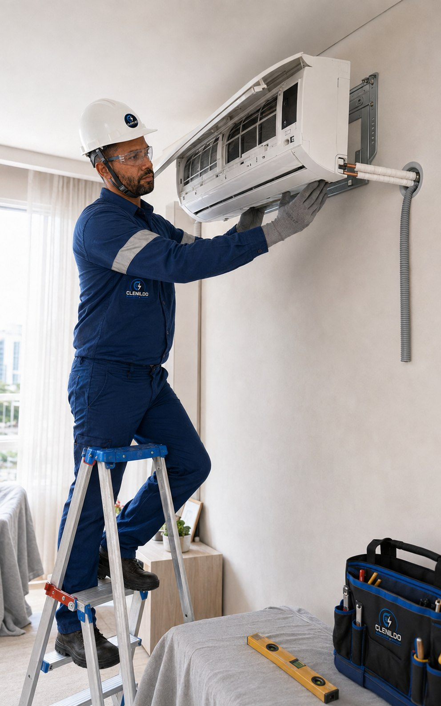

Refrigeração
Instalação de Ar-Condicionado
Instalação técnica de equipamentos split para entregar conforto, segurança e acabamento adequado ao ambiente.
Solicitar orçamento
Conforto instalado com cuidado técnico.
Avaliamos o ambiente, a posição das unidades, a infraestrutura e a drenagem antes da instalação.
O serviço é executado com atenção ao acabamento, à vedação e ao funcionamento correto do equipamento.